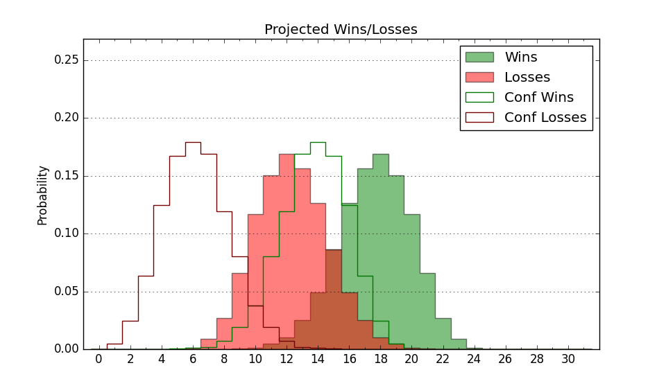

| Home | Game Probabilities | Conferences | Preseason Predictions | Odds Charts | NCAA Tournament |
| City: | Detroit, Michigan | |
| Conference: | Horizon (4th)
| |
| Record: | 1-1 (Conf) 4-6 (Overall) | |
| Ratings: | Comp.: 0.9 (157th) Net: 3.7 (132nd) Off: 113.1 (23rd) Def: 109.4 (309th) SoR: 0.7 (173rd) |
| Remaining | ||||||
|---|---|---|---|---|---|---|
| Date | Opponent | Win Prob | Pred. | |||
| 12/18 | @ Eastern Michigan (298) | 64.4% | W 84-80 | |||
| 12/21 | @ Cincinnati (97) | 21.9% | L 74-83 | |||
| 12/29 | Green Bay (360) | 95.9% | W 84-62 | |||
| 12/31 | Milwaukee (230) | 76.7% | W 81-72 | |||
| 1/6 | @ Wright St. (232) | 49.6% | L 79-80 | |||
| 1/8 | @ Northern Kentucky (234) | 50.0% | L 69-70 | |||
| 1/12 | Youngstown St. (162) | 65.9% | W 84-79 | |||
| 1/14 | Robert Morris (255) | 80.7% | W 78-69 | |||
| 1/21 | @ IUPUI (363) | 92.2% | W 82-65 | |||
| 1/23 | Oakland (315) | 88.4% | W 89-75 | |||
| 1/27 | @ Robert Morris (255) | 55.1% | W 74-73 | |||
| 1/29 | @ Youngstown St. (162) | 36.2% | L 80-84 | |||
| 2/2 | Cleveland St. (186) | 70.6% | W 74-69 | |||
| 2/4 | Fort Wayne (189) | 71.1% | W 77-71 | |||
| 2/9 | @ Milwaukee (230) | 49.2% | L 76-77 | |||
| 2/11 | @ Green Bay (360) | 87.3% | W 80-67 | |||
| 2/17 | @ Oakland (315) | 69.1% | W 85-79 | |||
| 2/19 | IUPUI (363) | 97.6% | W 86-61 | |||
| 2/23 | Northern Kentucky (234) | 77.3% | W 73-65 | |||
| 2/25 | Wright St. (232) | 77.0% | W 84-75 | |||
| Previous | Game Score | |||||
| Date | Opponent | Win Prob | Result | Off | Def | Net |
| 11/11 | @Boston College (207) | 45.3% | L 66-70 | -10.9 | 5.7 | -5.3 |
| 11/16 | Ohio (190) | 71.2% | W 88-74 | 12.8 | 7.4 | 20.2 |
| 11/19 | @Florida Atlantic (31) | 8.4% | L 55-76 | -18.3 | 8.1 | -10.2 |
| 11/21 | (N) Bryant (181) | 54.4% | L 88-98 | 14.0 | -35.2 | -21.2 |
| 11/23 | Charlotte (77) | 42.8% | W 70-49 | 12.5 | 27.3 | 39.8 |
| 11/25 | @Washington St. (50) | 11.9% | L 54-96 | -15.7 | -27.4 | -43.1 |
| 12/1 | @Fort Wayne (189) | 41.9% | W 75-66 | -7.6 | 23.9 | 16.3 |
| 12/3 | @Cleveland St. (186) | 41.4% | L 77-92 | 2.9 | -14.7 | -11.9 |
| 12/7 | @Tulsa (216) | 46.7% | W 76-72 | 3.4 | 6.6 | 9.9 |
| 12/10 | @Charlotte (77) | 18.0% | L 80-82 | 13.2 | -6.1 | 7.1 |
| Stats & Trends | |||||
|---|---|---|---|---|---|
| Current | Day | Week | Month | Season | |
| Composite | 0.9 | +0.4 | +0.5 | +6.0 | +7.7 |
| Comp Rank | 157 | +6 | +4 | +60 | +90 |
| Net Efficiency | 3.7 | +0.6 | +0.7 | -6.2 | -- |
| Net Rank | 132 | +4 | +12 | -27 | -- |
| Off Efficiency | 113.1 | +0.2 | +0.7 | +4.1 | -- |
| Off Rank | 23 | +3 | +4 | +59 | -- |
| Def Efficiency | 109.4 | +0.3 | -0.1 | -10.3 | -- |
| Def Rank | 309 | +6 | +4 | -139 | -- |
| SoS Rank | 36 | +6 | +4 | +143 | -- |
| Exp. Wins | 17.6 | +0.1 | +0.3 | +2.3 | +3.5 |
| Exp. Conf Wins | 13.8 | +0.1 | +0.3 | +1.8 | +2.7 |
| Conf Champ Prob | 34.8 | +0.8 | +5.5 | +17.3 | +23.3 |

| Advanced Stats | ||
|---|---|---|
| Stat | Value | Rank |
| Off Eff FG % | 0.515 | 130 |
| Off Ast Ratio | 0.124 | 292 |
| Off ORB% | 0.354 | 20 |
| Off TO Rate | 0.149 | 89 |
| Off FT Ratio | 0.341 | 108 |
| Def Eff FG % | 0.535 | 283 |
| Def Ast Ratio | 0.154 | 267 |
| Def ORB% | 0.350 | 350 |
| Def TO Rate | 0.160 | 178 |
| Def FT Ratio | 0.313 | 189 |